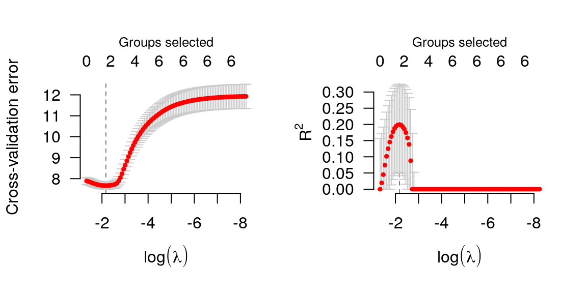
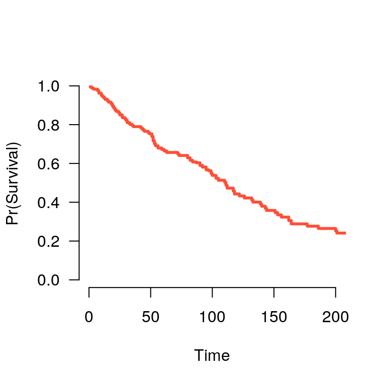
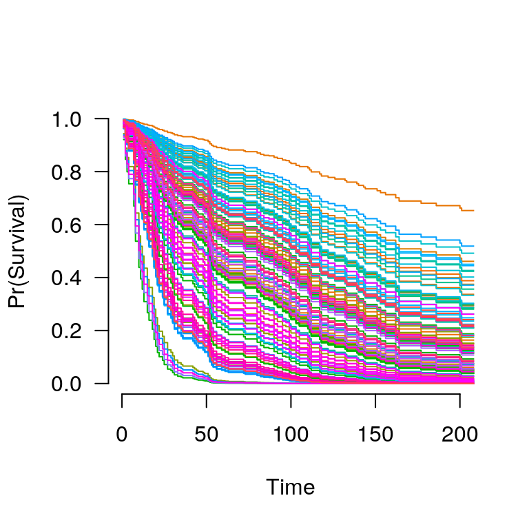

grpreg fits models that fall into the penalized likelihood framework. Rather than estimating \(\bb\) by maximizing the likelihood, in this framework we estimate \(\bb\) by minimizing the objective function \[
Q(\bb|\X, \y) = \frac{1}{n}L(\bb|\X,\y) + P_\lam(\bb),
\] where the loss function \(L(\bb|\X,\y)\) is the deviance (\(-2\) times the log-likelihood), \(P_\lam(\bb)\) is the penalty, and \(\lam\) is a regularization parameter that controls the tradeoff between the two components. This article describes the different loss models available in grpreg; see penalties for more information on the different penalties available.
In linear regression, the loss function is simply the squared error loss: \[ L(\bb|\X,\y) = \norm{\y-\X\bb}_2^2; \] this loss is proportional to the deviance if the outcome \(\y\) follows a normal distribution with constant variance and mean given by \(\X\bb\).
To fit a penalized linear regression model with grpreg:
In logistic regression, the loss function is: \[ L(\bb|\X,\y) = -2\sum_{i:y_i=1}\log\ph_i - 2\sum_{i:y_i=0}\log(1-\ph_i); \] this loss is the deviance for a binomial distribution with probabilities \(P(Y_i=1)=\ph_i\) given by: \[ \ph_i = \frac{\exp(\eta_i)}{1+\eta_i}, \] where \(\be = \X\bb\) denotes the linear predictors.
To fit a penalized logistic regression model with grpreg:
In Poisson regression, the loss function is: \[ L(\bb|\X,\y) = 2\sum_i \left\{y_i\log y_i - y_i\log \mu_i + mu_i - y_i\right\}; \] note that some of these terms are constant with respect to \(\mu_i\) and can therefore be ignored during optimization. This loss is the deviance for a Poisson distribution \(Y_i \sim \text{Pois}(\mh_i)\) with rate parameter given by: \[ \mh_i = \exp(\eta_i). \]
To fit a penalized Poisson regression model with grpreg:
The above models all fall into the category of distributions known as exponential families (hence the family) argument. grpreg also allows users to fit Cox proportional hazards models, although these models fall outside this framework and are therefore fit using a different function, grpsurv. In Cox regression, the deviance is \[
L(\bb|\X,\y) = -2\sum_{j=1}^{m} d_j \eta_j + 2\sum_{j=1}^{m} d_j \log\left\{\sum_{i \in R_j} \exp(\eta_i)\right\},
\] where \(t_1 < t_2 < \ldots < t_m\) denotes an increasing list of unique failure times indexed by \(j\) and \(R_j\) denotes the set of observations still at risk at time \(t_j\), known as the risk set.
The Lung data (see ?Lung for more details) provides an example of time-to-event data that can be used with Cox regression. Loading this data set into R,
To fit a penalized Cox regression model,
As before, you can call plot, coef, predict, etc. on fit:
coef(fit, lambda=0.1)
# trt karno1 karno2 karno3 diagtime1 diagtime2
# 0.0000000 -4.6535992 0.4641241 -0.3283532 0.0000000 0.0000000
# age1 age2 age3 prior squamous small
# 0.0000000 0.0000000 0.0000000 0.0000000 -0.2613796 0.1320625
# adeno large
# 0.2666665 -0.1424394Cross-validation is similar:

In addition to the quantities like coefficients and number of nonzero coefficients that predict returns for other types of models, predict() for an grpsurv object can also estimate the baseline hazard (using the Kalbfleish-Prentice method) and therefore, the survival function. A method to plot the resulting function is also available:
S <- predict(fit, X[1,], type='survival', lambda=0.02)
S(365) # Estiamted survival at 1 year
# [1] 0.09987997
plot(S, xlim=c(0,200))
When multiple subjects are involved in the prediction:
S <- predict(fit, X, type='survival', lambda=0.02)
S[[1]](365) # Estimated survival at 1 year for subject 1
# [1] 0.09987997
S[[2]](365) # Estimated survival at 1 year for subject 2
# [1] 0.1428503
plot(S, xlim=c(0,200))